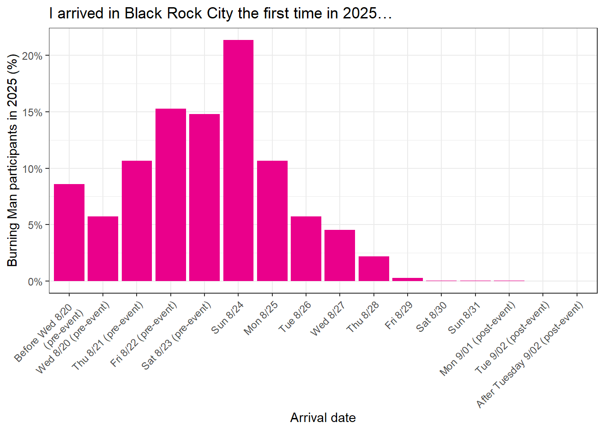

| 2025 | |
|---|---|
| Before Wed 8/20 (pre-event) | 8.6% (7.7%, 9.6%) |
| Wed 8/20 (pre-event) | 5.7% (5.0%, 6.6%) |
| Thu 8/21 (pre-event) | 10.7% (9.7%, 11.7%) |
| Fri 8/22 (pre-event) | 15.3% (14.1%, 16.6%) |
| Sat 8/23 (pre-event) | 14.8% (13.6%, 16.0%) |
| Sun 8/24 | 21.4% (20.0%, 22.8%) |
| Mon 8/25 | 10.6% (9.6%, 11.7%) |
| Tue 8/26 | 5.7% (5.0%, 6.6%) |
| Wed 8/27 | 4.5% (3.9%, 5.3%) |
| Thu 8/28 | 2.2% (1.7%, 2.9%) |
| Fri 8/29 | 0.3% (0.2%, 0.5%) |
| Sat 8/30 | < 0.1% (--, --) |
| Sun 8/31 | < 0.1% (--, --) |
| Mon 9/01 (post-event) | < 0.1% (--, --) |
| Tue 9/02 (post-event) | < 0.1% (--, --) |
| After Tuesday 9/02 (post-event) | < 0.1% (--, --) |